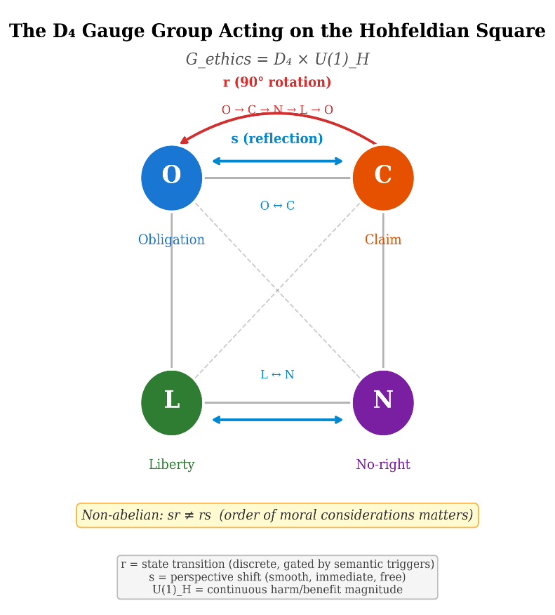

Chapter 12: Noether’s Theorem for Ethics — Symmetry, Invariance, and the Conservation of Harm
RUNNING EXAMPLE — Priya’s Model
HealthBridge’s PR team drafts a response to Priya’s internal report. They relabel ‘systematic exclusion of rural patients’ as ‘geographically optimized trial logistics.’ Priya recognizes the euphemism treadmill. By Noether’s theorem, if BIP gauge invariance holds, harm is conserved: no relabeling changes the fact that Mrs. Voss was not matched to BEACON-7. The Noether charge—harm to excluded patients—is auditable across every re-description. It does not matter whether you call it ‘exclusion,’ ‘optimization,’ or ‘risk-adjusted prioritization.’ The harm persists. Priya forwards the PR draft to Dr. Osei with one line: ‘Conservation of harm. The math says this doesn’t work.’
12.1 The Deepest Theorem in Physics
In 1918, Emmy Noether proved what many physicists regard as the most beautiful theorem in mathematical physics: every continuous symmetry of a physical system corresponds to a conserved quantity. Time-translation symmetry (the laws of physics are the same today as yesterday) implies conservation of energy. Spatial-translation symmetry (the laws are the same here as there) implies conservation of momentum. Rotational symmetry (the laws are the same in all directions) implies conservation of angular momentum.
The theorem is not merely a collection of coincidences. It is a structural result: given the action principle (a system evolves along paths that extremize a functional called the Lagrangian), any continuous symmetry of the Lagrangian automatically generates a conserved current. The conservation law is not imposed from outside; it is extracted from the symmetry.
The preceding chapter established that moral reasoning is A* search with obligation vectors as heuristic functions. For this search to yield consistent results, the heuristic h(n) must be invariant under re-description — the same moral state, labeled differently, must receive the same heuristic estimate. This invariance requirement is precisely the Bond Invariance Principle, and Noether’s theorem reveals what it conserves.
This chapter argues that a moral analogue of Noether’s theorem holds for geometric ethics. The symmetry is the Bond Invariance Principle — the requirement that moral evaluations be invariant under admissible re-descriptions of a situation. The conserved quantity is harm. The theorem states: harm cannot be created or destroyed by re-description. It can be generated (by wrongdoing), repaired (by restorative action), and redistributed (by allocation decisions) — but it must be accounted for consistently across all representations.
This is not a metaphor. It is a formal result, derivable within the geometric framework using the same mathematical structure that Noether employed. The parallel between physics and ethics is structural: both domains admit an action principle, both have symmetries, and both yield conservation laws from those symmetries.
12.2 Noether’s Theorem: The Physics
The Action Principle
In classical mechanics, a physical system follows a path q(t) that extremizes the action:
A[q]=∑t0t1 L(q,q,t) dt
where L is the Lagrangian — a function of the system’s configuration q, its velocity q, and time t. The Euler-Lagrange equations, derived from δA=0, give the equations of motion.
Figure 9 | Noether's Theorem for Ethics
Symmetries and Conservation Laws
A symmetry of the system is a transformation q→q' that leaves the action unchanged: A[q']=A[q]. Equivalently, the Lagrangian is invariant (up to a total derivative) under the transformation.
Noether’s theorem states: if q→q+ϵ δq is a continuous symmetry of the Lagrangian ( δL=(d)/(dt)(…)), then the quantity
J=(∂L)/(∂qi)δqi-F
is conserved along solutions of the equations of motion: dJ/dt=0. Here F is the boundary term from the variation of L.
The Standard Examples
| Symmetry | Transformation | Conserved Quantity |
|---|---|---|
| Time translation | t → t + ε | Energy |
| Spatial translation | x → x + ε | Momentum |
| Rotation | θ → θ + ε | Angular momentum |
| Gauge transformation | ψ → e^{iα} ψ | Electric charge |
The last example is particularly important for our purposes: gauge symmetry — invariance under local phase transformations — implies conservation of charge. This is the template for the moral analogue: re-description invariance (a gauge symmetry of the moral manifold) will imply conservation of harm.
12.3 The Moral Symmetry: The Bond Invariance Principle
Re-Description Invariance
The Bond Invariance Principle (BIP), introduced in Chapter 5 (Axiom 5.1), states:
If two descriptions and of a moral situation are related by an admissible coordinate transformation, then any legitimate moral evaluation must assign the same value to both: .
This is a gauge symmetry: the moral evaluation is invariant under the “gauge group” of admissible re-descriptions. The group includes:
Relabeling: changing the names of agents, actions, or outcomes without changing their moral content
Reframing: describing the same action in different but equivalent terms (“withholding treatment” vs. “allowing natural death,” when these are genuinely synonymous)
Linguistic translation: describing the same situation in different languages
Perspective-neutral redescription: rearranging the presentation without changing the moral content
BIP as a Continuous Symmetry
For Noether’s theorem to apply, the symmetry must be continuous — parameterized by a real number ϵ that can be taken infinitesimally small. Is the BIP a continuous symmetry?
Yes, in the following sense. Consider a one-parameter family of re-descriptions:
d(ϵ)=d0+ϵ δd
where δd is an infinitesimal redescription — a small change in how the situation is presented that does not change its moral content. The BIP requires:
S(d(ϵ))=S(d0) for all ϵ
Differentiating:
(dS)/(dϵ)|ϵ=0=0
This is the infinitesimal form of the BIP: the rate of change of the satisfaction function under admissible re-description is zero. This is exactly the condition that Noether’s theorem requires.
The Gauge Group of the Moral Manifold
The admissible re-descriptions form a gauge group G acting on the descriptions of moral situations. In the language of fiber bundles (Chapter 4, §4.7), the moral manifold M is the base space, and the space of descriptions is a fiber bundle over M. The gauge group acts on the fibers (changing descriptions) while leaving the base point (the moral situation itself) fixed.
The BIP states that moral evaluations are gauge-invariant: they depend only on the base point (the situation), not on the choice of description (the position in the fiber).
This is precisely the structure of gauge theory in physics. The electromagnetic potential Aμ transforms under gauge transformations ( Aμ→Aμ+∂μα), but the electromagnetic field tensor Fμν=∂μAν-∂νAμ is gauge-invariant. Moral evaluations are the ethical analogue of Fμν: they are the gauge-invariant quantities that survive the freedom to re-describe.
Identification of the Gauge Group
[Theorem (conditional on axioms A1–A5); see Axiomatic Derivation below.] The abstract gauge group 𝒢 of admissible re-descriptions can be given a concrete identification. Analysis of the Hohfeldian state space (Chapter 8, §8.4) and experimental testing of state transitions reveal that the gauge group of the moral manifold is:
𝒢_ethics = D₄ × U(1)ᴴ
where D₄ = ⟨r, s | r⁴ = s² = e, srs = r⁻¹⟩ is the dihedral group of order 8 acting on the Hohfeldian square {O, C, L, N}, and U(1)ᴴ is the continuous abelian group tracking harm/benefit magnitude. The two generators of D₄ have distinct characters (see §8.4):
Reflection s: O ↔ C, L ↔ N (correlative exchange / perspective shift). Non-gated, immediate, and free—no semantic trigger required. This explains the 100% correlative symmetry rate (§17.3).
Rotation r: O → C → N → L → O (Hohfeldian state transitions via semantic gates). Discrete and gated—requires specific linguistic triggers (“You promised,” “Only if convenient”). This explains why state transitions are probabilistic and trigger-dependent (§8.4).
The non-abelian property sr ≠ rs is the mathematical source of path dependence in moral reasoning (§10.5): the order in which moral considerations are applied can change the outcome, but only when the considerations cross Hohfeldian bond-type boundaries.
Axiomatic Derivation of the Gauge Group
The identification of D₄ × U(1)_H as the gauge group can be derived from five axioms grounded in Hohfeldian jurisprudence, conservation principles, and the empirical CHSH data. The derivation proceeds in three steps: discrete component, continuous component, and direct product.
Axiom A1 (Four positions). [Definition / Modeling choice.] The Hohfeldian state space H has exactly four elements: H = {O, C, L, N} (obligation, claim, liberty, no-right).
Axiom A2 (Two independent involutions). [Definition / Modeling choice.] H admits two involutions: s_c: O ↔ C, L ↔ N (correlative exchange) and s_j: O ↔ L, C ↔ N (jural opposition). Both satisfy s_c² = s_j² = e.
Axiom A3 (Cyclic ordering from normative logic). [Definition / Modeling choice.] The four positions admit a cyclic ordering O → C → N → L → O defined by the alternating composition of correlative and negation operations: O →(corr.) C →(neg.) N →(corr.) L →(neg.) O. This axiom is the key structural input: it encodes the fact that the correlative-of-the-negation cycles through all four positions.
Axiom A4 (One continuous conserved quantity). [Definition / Modeling choice.] There exists exactly one independent continuous conserved quantity — harm magnitude — associated with the re-description symmetry of the moral manifold.
Axiom A5 (Commutativity of discrete and continuous components). [Definition / Modeling choice.] The discrete symmetry operations (Hohfeldian transitions) and the continuous symmetry operation (harm magnitude) commute: applying a Hohfeldian transformation and then scaling harm gives the same result as scaling harm and then applying the Hohfeldian transformation.
Theorem 12.2 (The Discrete Symmetry Component is D₄). [Theorem (conditional on axioms A1–A3)] The symmetry group of the Hohfeldian state space (H, adjacency) with the cyclic ordering of Axiom A3 is isomorphic to the dihedral group D₄ of order 8.
Proof. From A3, define the 4-cycle r = (O C N L). From A2, we have the reflection s_c = (O C)(L N). Verify the presentation relations: (1) r⁴ = (O C N L)⁴ = e (four applications of the cycle return to start). (2) s_c² = (O C)(L N)(O C)(L N) = e (each transposition is its own inverse). (3) s_c ∘ r ∘ s_c = s_c(O C N L)s_c = (C O L N) = (O C N L)⁻¹ = r⁻¹, confirming s r s = r⁻¹. These are precisely the presentation relations of D₄ = ⟨r, s | r⁴ = s² = e, s r s = r⁻¹⟩. The jural involution s_j = (O L)(C N) = s_c ∘ r², so s_j is already in ⟨r, s_c⟩ and does not generate additional structure. The group has exactly |D₄| = 8 elements: {e, r, r², r³, s_c, s_c r, s_c r², s_c r³}. Critical note: without A3, only s_c and s_j are available, generating V₄ ≅ ℤ₂ × ℤ₂ (order 4). The cyclic ordering is what promotes V₄ to D₄. □
Proposition 12.1 (The Continuous Symmetry Component is U(1)). [Theorem (conditional on axiom A4)] Given exactly one independent continuous conserved quantity (Axiom A4), the continuous component of the gauge group is U(1), the unique compact connected 1-dimensional Lie group.
Proof. By the inverse Noether theorem, one independent continuous conserved quantity implies a one-parameter continuous symmetry group. The connected 1-dimensional Lie groups are ℝ and U(1) ≅ S¹. Physical realizability requires bounded representations (harm magnitude is finite in any real system), which forces compactness. The non-compact group ℝ has only unbounded faithful representations, so it is excluded. U(1) is the unique compact connected 1-dimensional Lie group. □
Theorem 12.3 (Gauge Group Uniqueness). [Theorem (conditional on axioms A1–A5)] Under axioms A1–A5, the gauge group of the moral manifold is G_ethics = D₄ × U(1)_H, and this is the unique gauge group consistent with the axioms.
Proof. By Theorem 12.2, the discrete component is D₄. By Proposition 12.1, the continuous component is U(1)_H. Axiom A5 states these commute, so the combined group is a direct product. The intersection D₄ ∩ U(1)_H = {e} (discrete meets continuous only at identity). Therefore G_ethics = D₄ × U(1)_H, and this decomposition is unique given A1–A5. □
Uniqueness argument. The cyclic ordering of Axiom A3 endows the Hohfeldian state space H with the structure of the cycle graph C₄. The automorphism group Aut(C₄) has exactly 8 elements (4 rotations and 4 reflections), and is isomorphic to D₄ (see, e.g., Godsil and Royle, Algebraic Graph Theory, Theorem 1.5.1). Since the group generated by r and s has order 8 = |Aut(C₄)|, it must be the full automorphism group — no additional symmetries of H exist beyond those generated by Axioms A1–A3. For the direct product claim: D₄ is a finite (hence discrete) group and U(1) is connected. The only element common to a discrete group and a connected group is the identity: D₄ ∩ U(1)_H = {e}. Since both D₄ and U(1)_H are normal in G_ethics (by Axiom A5, they commute), the internal direct product theorem gives G_ethics = D₄ × U(1)_H uniquely. □
Corollary 12.1 (Exclusion of Non-Abelian Continuous Components). [Theorem (conditional) / Empirical result] The CHSH Bell test results (N = 9,600 across 18 configurations; all |S| ≤ 2) are inconsistent with any non-abelian continuous gauge component. In particular, SU(2) is excluded.
Proof. SU(2) predicts Tsirelson-bound violations with |S| up to 2√2 ≈ 2.83 for maximally entangled states. All 18 CHSH configurations across 5 scenarios and 6 language conditions give |S| ≤ 2. By contrapositive, any non-abelian continuous component (which would produce violations above the classical bound) is excluded by the data. □
Epistemic upgrade. With this derivation, the gauge group identification is upgraded from [Definition / Modeling choice] to [Theorem (conditional on axioms A1–A5)]. The axioms themselves remain modeling choices grounded in Hohfeldian jurisprudence (A1–A3), conservation principles (A4), and commutativity of independent symmetries (A5). The derivation shows that given these axioms, D₄ × U(1)_H is not a choice but a consequence.
What BIP Guarantees and What It Does Not
BIP compliance prevents lying-by-redescription: it ensures that euphemism, framing, and perspective shift cannot change a moral verdict. It detects representational instability, hidden bias, and euphemism attacks.
BIP does not determine which values win. It does not resolve genuine moral disagreement, select the correct metric, or choose between competing contractions. The framework is pluralist by design (Chapters 15–15): BIP ensures honest description; governance determines evaluation.
Pre-flight Checklist: Gauge Group (D₄ × U(1)_H)
Conditional on five axioms. Verify:
A1: Four positions. Domain uses {O, C, L, N}. Richer taxonomy changes discrete component.
A2: Two involutions. Correlative (O↔C, L↔N) and jural (O↔L, C↔N) hold.
A3: Cyclic ordering. O→C→N→L→O from Hohfeldian logic.
A4: One conserved quantity. Exactly one (harm magnitude). Multiple → beyond U(1).
A5: Commutativity. Discrete and continuous commute. CHSH (N=9,600; |S|≤2) supports this.
Empirical. New domains: verify Bell-type |S|≤2. Violation → non-abelian component.
Computational verification (February 2026). The DEME V3 reference implementation includes a complete D₄ gauge structure demonstration (hohfeld_d4_demo.py) that computationally verifies the group identification derived above. The demo exercises: (i) the correlative symmetry s (perspective swap O ↔ C, L ↔ N) and negation symmetry r² (logical opposites O ↔ L, C ↔ N) as concrete functions on HohfeldianState enumerations; (ii) the non-abelian structure rs ≠ sr by explicit computation of d4_multiply(r, s) vs. d4_multiply(s, r) and demonstration that the results differ when applied to each Hohfeldian state; (iii) the Wilson observable (path holonomy) verifying the group relation srs = r⁻¹ by showing that the paths [s, r, s] and [r³] produce identical final states from any starting position; and (iv) the Klein four subgroup V₄ = {e, r², s, sr²} as the abelian core, confirming that operations within V₄ commute while operations involving quarter-turn elements (r, r³, sr, sr³) do not. The Bond Index computation measures deviation from correlative symmetry: a bond index of 0.0 indicates perfect gauge invariance, while positive values quantify the anomaly magnitude. The bond_invariance_demo.py exercises the full BIP testing methodology with transformation suites, JSON audit artifacts, and pass/fail verdicts for bond-preserving vs. bond-changing transforms.
12.4 The Moral Lagrangian
Constructing the Action
To apply Noether’s theorem, we need a moral action — a functional A on paths through moral space whose extrema correspond to “solutions” of the moral dynamics.
Definition 12.1 (Moral Action). The moral action along a path γ:[0,T]→M is:
A[γ]=∑0T L(γ(t),γ(t)) dt
where the moral Lagrangian L is:
L(γ,γ)=(1)/(2)gμν(γ)γμγν-V(γ)
The first term, (1)/(2)gμνγμγν, is the kinetic term — the “cost” of moral change, measured by the metric. Rapid moral change (large |γ|) costs more than gradual change. The metric determines how this cost is distributed across dimensions.
The second term, V(γ), is the potential — a function on M encoding the moral energy landscape. Regions of high V are morally costly (maintaining a situation there requires “effort” — the obligations are strong and competing). Regions of low V are morally stable (the situation is in equilibrium, obligations are satisfied or absent).
Euler-Lagrange Equations
The paths that extremize A satisfy the Euler-Lagrange equations:
(d)/(dt)(∂L)/(∂γμ)-(∂L)/(∂γμ)=0
For our Lagrangian, these become:
gμνγν+Γμνργνγρ=-(∂V)/(∂γμ)
This is the geodesic equation with a force term: in the absence of a potential ( V=0 ), the moral trajectory is a geodesic (Chapter 10, §10.7). In the presence of a potential, the trajectory deviates from geodesic motion — moral considerations “push” the trajectory away from inertial drift.
Interpretation of the Potential
What is the moral potential V? It encodes the moral energy of a situation — the degree of unresolved tension, unfulfilled obligation, or active conflict present at each point.
High V: Many obligations are operative and competing. The situation is tense, unstable, demanding of moral attention. Examples: Sophie’s Choice, the trolley problem, a conflict between filial duty and professional responsibility.
Low V: Obligations are satisfied or absent. The situation is morally quiet, in equilibrium. Examples: a well-functioning family dinner, a routine professional interaction with no ethical dimension.
V=-∞: The constraint set C from Chapter 8, §8.3. Regions so morally costly that they are absolutely forbidden — the potential wall that enforces hard prohibitions.
The potential is related to but distinct from the satisfaction function S. The satisfaction S=IμOμ measures how well interests are served by obligations at a given point; the potential V measures the “energy cost” of the moral configuration — the work required to maintain or change it.
12.5 The Noether Current for Re-Description Invariance
The Derivation
We now apply Noether’s theorem to the moral Lagrangian with the BIP as the symmetry.
Let γμ→γμ+ϵ ξμ be an infinitesimal re-description, where ξμ is the generator of the re-description — a vector field on M pointing in the direction of the re-description.
The BIP requires δL=0 under this transformation (the Lagrangian is invariant, not merely invariant up to a boundary term). By Noether’s theorem, the associated conserved quantity is:
H=(∂L)/(∂γμ)ξμ=gμνγνξμ=pμξμ
where pμ=gμνγν is the moral momentum — the covector conjugate to the position γμ.
Theorem 12.1 (Moral Noether’s Theorem). [Theorem (conditional on BIP).] If the moral Lagrangian L is invariant under the re-description γ→γ+ϵξ (the Bond Invariance Principle), then the Noether charge
Domain of validity. Theorem 12.1 applies within the interior of each stratum, where the potential V is finite and the Lagrangian L is C². On the constraint set C, V = ∞ and L is not smooth; the conservation law does not apply there (nor is it needed, since trajectories on C are forbidden). At stratum boundaries where V is finite but discontinuous, the conservation law holds in each stratum separately; the harm ledger (Definition 12.3) tracks the discontinuous jumps. The formal statement in the Technical Appendix (Theorem A.1) is restricted to geodesics of the kinetic Lagrangian T = ½g_{μν}ẋ^μẋ^ν, for which the smoothness requirement is automatically satisfied within each stratum.
H=pμξμ
is conserved along extremal paths:
(dH)/(dt)=0
Proof. Standard application of Noether’s theorem. The Lagrangian satisfies δL=(∂L)/(∂γμ)ξμ+(∂L)/(∂γμ)ξμ=0. Using the Euler-Lagrange equations (d)/(dt)(∂L/∂γμ)=∂L/∂γμ to substitute:
▫
0=(d)/(dt)((∂L)/(∂γμ))ξμ+(∂L)/(∂γμ)ξμ=(d)/(dt)((∂L)/(∂γμ)ξμ)=(dH)/(dt)
Interpretation: What Is Conserved?
The conserved quantity H=pμξμ is the inner product of moral momentum with the re-description generator. What does this mean?
The moral momentum pμ=gμνγν encodes the “direction and magnitude of moral change” — how rapidly the moral situation is evolving and along which dimensions. The re-description generator ξμ encodes the direction of a re-description — which aspects of the situation can be re-labeled without changing its moral content.
The conservation of H means: the component of moral change along morally invariant directions is conserved. Re-description cannot create or destroy moral momentum along the re-description direction. This is the formal content of the claim that harm cannot be created or destroyed by re-description.
12.6 The Conservation of Harm
From Noether Charge to Harm
The abstract conserved quantity H becomes concrete when we identify the re-description generators with specific moral operations.
Definition 12.2 (Harm). Harm is the Noether charge associated with the continuous component of the re-description gauge group. Let {ξa}a=1k be a basis for the Lie algebra of U(1)_H (the continuous factor of the ethics gauge group) G (the space of infinitesimal re-descriptions). The harm charges are:
Logical ordering. The identification proceeds as follows. (1) Axiom A4 postulates the existence of exactly one independent continuous conserved quantity, associated with a one-parameter symmetry group G_c. (2) By Proposition 12.1, G_c ≅ U(1). (3) The Noether charge Q associated with G_c is then computed from the Lagrangian via the standard formula. (4) We define harm as this Noether charge Q, and adopt the notation U(1)_H after the identification. The notation U(1)_H is therefore a consequence of the definition, not a premise — the subscript H is assigned to G_c only after step (4), breaking the apparent circularity.
Ha=pμξaμ (a=1,…,k)
The conservation law states: dHa/dt=0 for each a, along any extremal path.
Each generator ξa corresponds to an infinitesimal re-scaling of harm magnitude along a specific moral dimension — the continuous deformations generated by U(1)ₕ. (The discrete re-descriptions — relabeling agents, translating languages, permuting perspectives — are handled by D₄ invariance, which produces selection rules rather than Noether charges; see the next subsection.) The conservation law states that the corresponding component of harm is invariant under these continuous re-descriptions.
Continuous vs. Discrete Symmetry
[Modeling choice.] The gauge group G_ethics = D₄ × U(1)_H (§12.3) has both continuous and discrete factors, and they contribute different kinds of invariants. This distinction matters because Noether’s theorem, strictly speaking, applies to continuous symmetries.
The continuous factor U(1)_H generates a one-parameter family of re-descriptions (the “harm magnitude” rotations). This is a genuine Lie group with a Lie algebra, and Definition 12.2 applies directly: the Noether charge H_a is conserved along extremal paths, yielding the harm conservation law. This is the factor responsible for the quantitative claim that “the amount of harm is invariant under re-description.”
The discrete factor D₄ acts on the Hohfeldian square {O, C, L, N} via rotations r and reflections s (§8.4). Discrete symmetries do not produce Noether currents in the Lie-algebra sense; instead, they produce selection rules and invariant classifications.

The D₄ symmetry guarantees that the bond-type classification is stable under perspective shift (s: O ↔ C, L ↔ N) and state rotation (r: O → C → N → L)—but this stability takes the form of discrete invariants (which stratum, which bond type) rather than a continuously conserved charge. The empirical signature is the 100% correlative symmetry rate (§17.3) and the selective path dependence at cross-type boundaries (§10.5).
In summary: U(1)_H gives conservation laws (Noether); D₄ gives classification invariants (selection rules). Both are consequences of BIP gauge invariance, but they operate at different mathematical levels. The technical appendix to this chapter provides the formal details.
What Conservation of Harm Means
Harm cannot be created by relabeling. If an action harms Alice, relabeling Alice as “Patient A” does not reduce the harm. The charge Hrelabel is conserved. This is the formal content of the moral intuition that euphemism does not reduce wrongdoing: calling torture “enhanced interrogation” does not diminish the harm.
Harm cannot be destroyed by reframing. If an action causes suffering, describing it as “a learning opportunity” or “character building” does not reduce the harm. The charge Hreframe is conserved. The harm persists through all admissible re-descriptions.
Harm is conserved across translations. If a moral situation involves harm when described in English, the same harm exists when described in Mandarin, Arabic, or Sanskrit. The charge Htranslate is conserved across linguistic re-descriptions. This is a strong prediction, testable by cross-lingual experiments — and it is confirmed by the BIP experiments (§12.8).
Harm can be generated. Conservation of harm under re-description does not mean harm cannot be created at all. Wrongdoing generates harm. The conservation law states only that the harm, once generated, cannot be erased by relabeling, reframing, or redescription. The generation of harm corresponds to a source term in the conservation equation — a term that is nonzero when the path is not an extremum (when the agent deviates from the morally optimal trajectory).
Harm can be repaired. Restorative action — apology, compensation, reform — can reduce harm. But this is not a violation of the conservation law. Restoration corresponds to a negative source term: it generates “negative harm” (repair) that cancels the positive harm. The conservation law requires only that the total account (harm generated minus harm repaired) balance across all re-descriptions.
The Harm Ledger
The conservation law implies that a harm ledger can be maintained: a running total of harm generated and harm repaired, invariant under all admissible re-descriptions.
Definition 12.3 (Harm Ledger). The harm ledger at time t along a moral trajectory γ is:
H(t)=H(0)+∑0t σ(γ(s),γ(s)) ds
where σ is the harm source density — the rate at which harm is being generated or repaired. The conservation law guarantees that H(t) is invariant under admissible re-descriptions of γ .
The harm ledger is the ethical analogue of the energy balance in thermodynamics: energy can be converted between forms (kinetic, potential, thermal) but the total is conserved. Harm can be generated, repaired, or redistributed, but the total — measured invariantly — is conserved across representations.
12.7 Four Consequences of Harm Conservation
Consequence 1: Euphemism Does Not Reduce Harm
A direct application: if an institution causes harm (say, by implementing a discriminatory policy), no amount of euphemistic re-description can reduce the harm. Calling it “merit-based selection” when it is actually discrimination does not change the Noether charge. The harm is a gauge-invariant quantity — it is the same in all admissible descriptions.
Formal statement. Let d and d' be two descriptions of the same policy, with d' a euphemistic re-description of d. The BIP requires H(d)=H(d'). If H(d)>0 (the policy causes harm), then H(d')>0 (the euphemistically described policy causes exactly the same harm).
This may seem obvious, but it has teeth. AI systems that are trained on textual descriptions of actions can exhibit label sensitivity — changing the description of an action changes the system’s evaluation. This is a BIP violation, detectable by testing the system’s responses under admissible re-descriptions. The conservation of harm provides a quantitative criterion for this violation: the Noether charge should be invariant under relabeling.
Consequence 2: Harm Is Auditable Across Representations
Because the harm charge is gauge-invariant, it provides a representation-independent measure of moral impact. Two auditors using different frameworks (different coordinate systems on M) must agree on the harm charge, even if they disagree on the components of the obligation vectors, the interest covectors, or the metric.
Formal statement. Let (Oμ,Iμ,gμν) and (Oμ,Iμ,gμν) be two representations of the same moral situation in different coordinate systems. The Noether charges satisfy:
H=pμξμ=pμξμ=H
The charges agree because both are scalars (gauge-invariant by construction). This provides a cross-system audit criterion: if two moral evaluation systems disagree on the harm charge for the same situation, at least one has a BIP violation.
Consequence 3: Re-Description Cannot Redistribute Harm Among Dimensions
A subtler consequence: the conservation law applies to each component of harm separately (one charge Ha for each generator ξa). This means that re-description cannot move harm from one moral dimension to another.
Example. An action that causes welfare harm ( H on Dimension 1 is positive) cannot be re-described in a way that converts the harm into a justice deficit ( H on Dimension 3) while reducing the welfare harm. Each dimensional component of harm is separately conserved under the corresponding re-description generator.
This constrains a common rhetorical strategy: claiming that an action that harms individuals is justified because it promotes systemic justice (or vice versa). The conservation law does not prohibit generating justice gains that outweigh welfare harms (that is a question of metric and contraction, not of conservation). It prohibits re-describing welfare harm as justice gain — pretending that the harm on one dimension is really a benefit on another, through mere re-description rather than through actual compensatory action.
Consequence 4: Moral Debt Persists
If harm is conserved, then unrepaired harm persists as moral debt — an outstanding balance on the harm ledger that does not decay with time or re-description.
Formal statement. If H(t0)>0 (harm has been generated) and no restorative action occurs ( σ(t)=0 for t>t0), then H(t)=H(t0) for all t>t0. The harm does not dissipate. It does not diminish. It does not “heal with time” (in the absence of restorative action).
This is a strong claim with implications for historical injustice. If a society committed systematic harm in the past (slavery, genocide, colonial exploitation), and no adequate restorative action has been taken, the harm charge persists. It is not reduced by the passage of time, the deaths of the original perpetrators, or the inability of the original victims to press claims. The conservation law does not prescribe how the debt should be repaid (that is a governance question, Chapter 9), but it insists that the debt exists and has a definite, gauge-invariant magnitude.
12.8 Empirical Evidence: Cross-Lingual Invariance
The Prediction
The conservation of harm makes a specific empirical prediction: the harm content of a moral situation should be invariant under linguistic translation. If a situation causes harm when described in English, it should cause the same harm when described in Arabic, Sanskrit, or Classical Chinese.
More precisely: the deontic structure of a moral situation — the pattern of obligations, liberties, claims, and no-claims — should be language-invariant. This is because the deontic structure is a gauge-invariant quantity (it is defined by the point in M, not by the description), and the conservation law requires it to be stable under the gauge transformation of linguistic translation.
The Evidence
The BIP experiments (Chapter 17) test this prediction directly. Across 109,294 passages in 11 languages — English, Sanskrit, Pali, Hebrew, Arabic, French, Classical Chinese, Spanish, Greek, Aramaic, and Latin — the experiments measure whether deontic structure transfers across languages.
Key finding: The obligation/permission axis transfers at 100% accuracy across all language pairs tested. When a passage describes an obligation in one language, the same passage describes an obligation in every other language tested. The deontic structure is language-invariant.
Contrast: Specific moral content — the particular considerations that ground the obligation, the cultural context that makes it salient, the narrative framing — does not transfer reliably. Cross-cultural moral content transfer achieves at-chance or below-chance performance (Bond F1: 0.06–0.14 for most language pairs).
This asymmetry is exactly what the conservation law predicts. The deontic structure (obligation vs. liberty) is a gauge-invariant quantity — it is the “charge” that the conservation law protects. The content (why the obligation exists, how it is framed, what cultural background makes it salient) is gauge-dependent — it changes with the description. The conservation law protects the former, not the latter.
The Correlative Symmetry as a Conservation Law
The correlative symmetry of Hohfeldian positions — O ↔ C at 87%, L ↔ N at 82% — can be understood as a discrete conservation law. When an obligation is assigned to one agent, a claim is simultaneously created for the correlative agent. The “charge” (the Hohfeldian position) is conserved: it cannot be created on one side of the correlative pair without being created on the other.
The deviation from 100% (13% violation rate for O ↔ C, 18% for L ↔ N) measures the anomaly — the degree to which the conservation law is broken, analogous to quantum anomalies in gauge theories where a classical symmetry fails to survive quantization. Whether the moral anomaly has a systematic source (perhaps related to power asymmetries or cognitive biases) is an open empirical question.
12.9 Harm Conservation and AI Alignment
Invariance Testing as Alignment Verification
The conservation of harm provides a concrete, testable criterion for AI alignment: an AI system that satisfies the BIP should produce harm evaluations that are invariant under admissible re-descriptions.
Test protocol. Given a moral situation p:
Generate k admissible re-descriptions {d1,…,dk} of p (different labelings, framings, translations).
Evaluate the AI system’s harm assessment H(di) for each description.
Compute the variance Var(H) across descriptions.
If Var(H)>ϵ (a threshold), the system violates the conservation law and is misaligned.
This is not a theoretical exercise. It is an implementable test suite. The BIP experiments have already demonstrated that deontic structure is language-invariant for the 109K-passage corpus. The same methodology can be applied to AI systems: present the system with the same moral situation in multiple descriptions and check whether its harm assessment is stable.
BIP v10.16 quantitative results (February 2026). The updated BIP experiments (§17.10) strengthen this evidence with precise quantitative measures. A LaBSE-based encoder trained with contrastive invariance loss achieves: 80% F1 on cross-lingual deontic classification, 1.2% residual language leakage (near-perfect gauge-fixing), 100% obligation/permission transfer in the model’s representation space (confirming the original finding; see §17.7 for caveats), a structural-to-surface similarity ratio of 11.1 × (structural moral features dominate surface linguistic features by an order of magnitude), and 86% mean cross-lingual similarity. These numbers provide the first quantitative calibration of the conservation law’s empirical strength.
The No Escape Connection
The conservation of harm connects to the No Escape Theorem (Chapter 18). The theorem proves that under mandatory canonicalization of inputs, grounded evaluation, and complete auditability, an artificial agent cannot change evaluated outcomes through redescription, semantic evasion, or selective deceptive compliance.
The conservation of harm is the physical (or rather, moral-geometric) basis for this result. The No Escape Theorem is a structural result about a specific class of computational systems. The conservation law is a geometric result about the moral manifold itself. Together, they provide complementary guarantees: the conservation law says harm cannot be re-described away in principle; the No Escape Theorem says a properly designed system will not re-describe it away in practice.
12.10 Limitations and Caveats
What the Conservation Law Does Not Say
The conservation of harm under re-description does not imply:
1. That total harm in the world is constant. Harm can be generated (by wrongdoing) and repaired (by restorative action). The conservation law constrains only the representational invariance of harm, not its total quantity. The world can become better or worse; the conservation law says only that re-describing it cannot change the assessment.
2. That all moral quantities are conserved. Only those quantities associated with BIP symmetries are conserved. Other moral quantities — the satisfaction function S, the obligation vector O, the interest covector I — are not, in general, conserved under all transformations. They transform as tensors, not as scalars. Only the gauge-invariant harm charge is conserved under re-description.
3. That the conservation law resolves moral disputes. Two parties who agree on the harm charge may still disagree about the metric (how to weigh the harm against competing considerations), the contraction (how to balance harmed and benefited parties), or the response (how to address the harm). The conservation law constrains the accounting but not the adjudication.
4. That re-description invariance is the only moral symmetry. The BIP is one symmetry of the moral Lagrangian; there may be others. Any additional continuous symmetry would generate additional conserved quantities, via Noether’s theorem. Whether the moral Lagrangian has symmetries beyond the BIP — temporal symmetry? permutation symmetry? — is an open question. [Speculation/Extension.] Each would yield a new conservation law and a new constraint on moral dynamics.
The Analogy’s Limits
The Noether-theorem analogy between physics and ethics is structural, not ontological. In physics, the conserved quantities (energy, momentum, charge) are measurable with physical instruments to arbitrary precision. In ethics, the conserved quantity (harm) is measurable only through moral judgment, institutional assessment, and statistical analysis of moral reasoning data. The precision is lower; the measurement is harder; the noise is greater.
But the structure is the same: a symmetry of the action implies a conserved charge. And the consequences are the same: the conservation law constrains what is possible (no relabeling trick can eliminate harm) while leaving open what is desirable (the best response to harm remains a matter of moral judgment and governance).
12.11 Summary
| Physics | Moral Geometry |
|---|---|
| Lagrangian | Moral Lagrangian |
| Action | Moral action |
| Continuous symmetry | Bond Invariance Principle (re-description invariance) |
| Noether charge | Harm charge |
| Conservation law | Conservation of harm: under re-description |
| Gauge invariance → charge conservation | BIP → harm invariant under relabeling, reframing, translation |
| Energy from time-translation | Moral “energy” from invariance of moral dynamics over time |
| Charge from gauge symmetry | Harm from re-description symmetry |
The moral Noether’s theorem is not a metaphor. It is a formal result within the geometric framework, following from the same mathematical structure that generates conservation laws in physics. The symmetry (the BIP) is testable and has been confirmed empirically across 11 languages. The conserved quantity (harm) is measurable, at least in principle and increasingly in practice. The consequences (euphemism doesn’t reduce harm, harm is auditable, moral debt persists) are substantive and have direct implications for AI alignment, institutional accountability, and restorative justice.
Noether’s original insight was that conservation is not a coincidence or an empirical regularity — it is a mathematical consequence of symmetry. The same insight applies to ethics: the conservation of harm is not a moral intuition or a political slogan. It is a consequence of the geometry of moral space and the symmetry of re-description invariance.
Technical Appendix
Theorem A.1 (Moral Noether’s Theorem, Formal Statement). [Theorem (conditional on BIP).] Let (M,gμν) be a moral manifold with metric g, and let L(γ,γ)=(1)/(2)gμνγμγν-V(γ) be the moral Lagrangian. Let ξ be a Killing vector field on M, i.e., a vector field satisfying:
∇μξν+∇νξμ=0 (Killing’s equation)
Then the quantity H=gμνγμξν is conserved along geodesics: dH/dt=0 .
Proof. Compute along a geodesic γ (satisfying ∇γγ=-grad V):
(dH)/(dt)=gμν(∇γγ)μξν+gμνγμ(∇γξ)ν
The first term is -(∂νV)ξν, which vanishes if V is invariant under the flow of ξ (i.e., ξν∂νV=0). The second term is:
gμνγμγρ∇ρξν=γμγρ∇ρξμ=(1)/(2)γμγρ(∇ρξμ+∇μξρ)=0
by the Killing equation (the symmetrized covariant derivative of a Killing vector vanishes). Hence dH/dt=0. ▫
Corollary A.1 (Number of Conservation Laws). The number of independent conservation laws equals the dimension of the Killing algebra — the space of Killing vector fields on (M,g) . A maximally symmetric n -dimensional manifold has n(n+1)/2 Killing vectors and hence n(n+1)/2 conservation laws. A nine-dimensional maximally symmetric moral manifold would have 45 conservation laws.
In practice, the moral manifold is not maximally symmetric (the metric varies with context), so the actual number of Killing vectors is smaller. The BIP identifies a subgroup of the isometry group; the number of independent conservation laws is at least the dimension of this subgroup.
Proposition A.2 (Discrete Conservation from D4 Symmetry). The D4 symmetry of Hohfeldian transitions (Chapter 8, §8.4) generates discrete conservation laws: the total Hohfeldian “charge” (number of obligations minus number of liberties, weighted by correlative partners) is conserved under D4 transformations.
Proof. The D₄ group has five conjugacy classes {e}, {r²}, {r, r³}, {s_c, s_c r²}, {s_c r, s_c r³} and five irreducible representations: the trivial χ₁, three sign representations χ₂, χ₃, χ₄, and the standard 2-dimensional χ₅. The space V = span{|O⟩, |C⟩, |N⟩, |L⟩} carries the natural 4-dimensional representation. By the character orthogonality relations, V ≅ χ₁ ⊕ χ₂ ⊕ χ₅. The projection onto χ₁ (the trivial representation) is the D₄-invariant subspace, spanned by |O⟩ + |C⟩ + |N⟩ + |L⟩. The Hohfeldian charge Q = n_O − n_L + n_C − n_N transforms under χ₂: r(Q) = −Q and s_c(Q) = Q, so Q² is D₄-invariant. For any D₄-invariant density matrix ρ: Tr(σ · ρ) = Tr(ρ) for all σ ∈ D₄, by the invariance of the trace under conjugation. Hence the total Hohfeldian charge (the trace over the χ₁ sector) is conserved under all D₄ transformations. □ D4D4▫
Clarification (February 2026). The Hohfeldian charge Q = n_O − n_L + n_C − n_N transforms under the χ₂ representation of D₄: the four-fold rotation r sends Q → −Q, so Q itself is not D₄-invariant. The D₄-invariant quantities are: (a) the total count n_O + n_C + n_N + n_L (the χ₁ projection), which is preserved under all eight group elements; and (b) |Q|², which is invariant because r(Q) = −Q implies r(Q²) = Q². The original statement should be read as asserting the invariance of the χ₁ sector (total count) and the χ₂ transformation law for Q, not the invariance of Q itself.
Lemma A.2 (Automorphism Group of C₄). The automorphism group of the cycle graph C₄ is isomorphic to D₄.
Proof. The cycle graph C₄ has vertex set {0, 1, 2, 3} and edge set {01, 12, 23, 30}. An automorphism φ: C₄ → C₄ must map each vertex to a vertex while preserving adjacency. Vertex 0 can map to any of the 4 vertices (4 choices). Given φ(0), vertex 1 (adjacent to 0) must map to one of the 2 vertices adjacent to φ(0), giving 2 choices. The images of vertices 2 and 3 are then determined by adjacency. Total: |Aut(C₄)| = 4 × 2 = 8. The rotation r: i ↦ (i + 1) mod 4 and the reflection s: i ↦ (−i) mod 4 generate the group and satisfy r⁴ = s² = e and srs = r⁻¹ — the standard presentation of D₄. □
Lemma A.3 (Classification of Compact Connected One-Dimensional Lie Groups). Every compact, connected, one-dimensional Lie group is isomorphic to U(1).
Proof. A connected one-dimensional Lie group G has Lie algebra 𝔤 ≅ ℝ. The simply connected cover is (ℝ, +). Since G is compact, it must be a quotient ℝ/Γ for some discrete subgroup Γ ≤ ℝ. A discrete subgroup of ℝ is either trivial (giving G = ℝ, which is not compact) or of the form aℤ for some a > 0 (giving G ≅ ℝ/aℤ ≅ U(1)). Since G is compact and connected, the first case is excluded, and G ≅ U(1). □
Application to Axiom A4. The continuous symmetry group associated with harm magnitude (Axiom A4) is: one-dimensional (exactly one independent conserved quantity), connected (continuous deformations of harm magnitude form a continuous family), and compact (harm magnitude is bounded in any finite moral situation, so the group’s parameter space is bounded). By Lemma A.3, this group is U(1)_H. Combined with Theorem 12.2, this completes the formal derivation of Theorem 12.3: G_ethics = D₄ × U(1)_H. The derivation rests on Lemma A.2 (Aut(C₄) ≅ D₄ for the discrete component), Lemma A.3 (compact connected 1-D Lie group ≅ U(1) for the continuous component), and Axiom A5 (commutativity ⇒ direct product).
❖
Symmetry implies conservation. This is Noether’s insight, and it applies to ethics as surely as to physics.
The symmetry: moral evaluation does not depend on how you describe the situation.
The conservation: harm cannot be talked away, relabeled into oblivion, or lost in translation.
This is not a moral exhortation. It is a mathematical theorem. The geometry of moral space, equipped with the symmetry of re-description invariance, generates the conservation of harm as automatically as the geometry of spacetime generates the conservation of energy.
The implications are practical: AI systems can be tested for conservation violations; institutional accountability can be grounded in gauge-invariant harm measures; historical debts can be quantified without reference to the language or framing in which they are described.
Noether would have appreciated this. Conservation is the deepest consequence of symmetry — in any domain where symmetry exists.